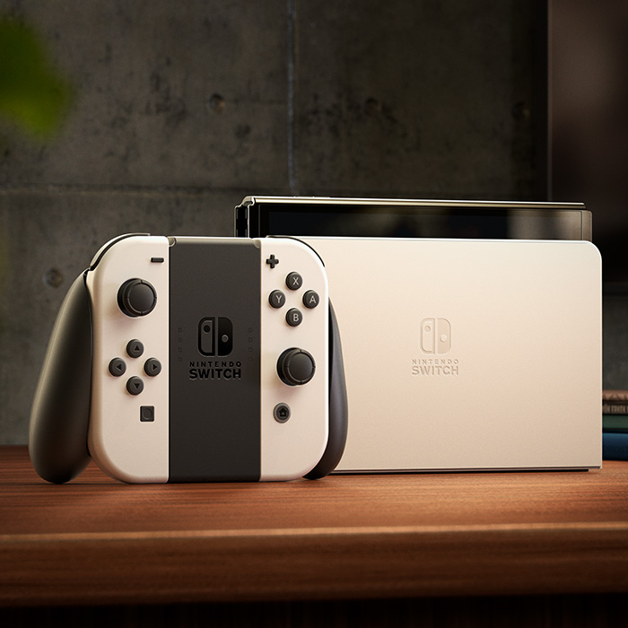

Добро Пожаловать на фанатский сайт посвященный Nintendo Switch
Здесь вы найдете информацию о самой популярной портативной консоли
Технические Характеристики
| Размеры | 102 мм x 242 мм x 13,9 мм (с прикрепленными контроллерами Joy-Con) |
|---|---|
| Вес | Около 320 г (с прикрепленными контроллерами Joy-Con: 420 г) |
| Экран | Емкостный сенсорный экран / 7 дюймов, OLED / разрешение: 1280x720 |
| Центральный процессор / Графический процессор | Процессор NVIDIA Tegra, разработанный под заказ |
| Память системы | 64 ГБ Расширить память консоли можно с помощью совместимой карты microSD (продается отдельно) |
| Возможности связи | Беспроводная сеть (стандарты IEEE 802.11 a/b/g/n/ac) / Bluetooth 4.1 В режиме ТВ также можно использовать проводное подключение к сети. |
| Видеосигнал | Максимальное разрешение: 1920x1080, 60 кадров в секунду Примечание. При использовании кабеля HDMI в режиме ТВ. В настольном и портативном режимах максимальное разрешение составляет 1280x720, что равняется разрешению экрана. |
| Аудиосигнал | Поддержка linear PCM 5.1ch Примечание. При использовании кабеля HDMI в режиме ТВ. |
| Динамики | Стерео |
| Терминал USB | Терминал USB Type-C Для зарядки батареи или подключения док-станции Nintendo Switch. |
| Разъем для наушников и микрофона | 4-контактный 3,5 мм стерео мини-разъем (стандарт CTIA) |
| Слот для игровых карт | Только для игровых карт Nintendo Switch. |
| Слот для карт microSD | Совместим с картами памяти microSD, microSDHC и microSDXC. |
| Сенсоры | Акселерометр / гироскоп / сенсор яркости |
| Операционная среда | Диапазон температур: 5–35°C / Влажность: 20–80% |
| Встроенная батарея | Литий-ионная батарея / емкость батареи: 4310 мАч |
| Время работы от батареи | Около 4,5–9 часов |
| Время зарядки батареи | Около трех часов |
Способы Игры
Режим Док станции

Соберитесь у большого экрана и играйте в компании друзей.
Подключите консоль к телевизору и наслаждайтесь играми в HD на большом экране.
Настольний Режим

Поделитесь экраном, поделитесь весельем
Откиньте опору консоли и играйте вместе с друзьями на экране консоли.
Портативный Режим

Возьмите с собой большой и прекрасный экран.
Подключите контроллеры Joy-Con, берите консоль с собой и играйте где угодно.
Играйте в одиночку и вместе с друзьями в локальном или сетевом режиме.
Zelda Breath Of The Wild

Шагните в мир приключений
Забудьте все, что вы знали об играх The Legend of Zelda. Шагните в мир открытий, исследований и приключений в революционной игре The Legend of Zelda: Breath of the Wild из популярной серии.
Открой глаза
Не осталось ничего: ни королевства, ни воспоминаний. После столетнего сна Линк просыпается в мире, который он совсем не помнит. Чтобы вернуть воспоминания, легендарному герою предстоит исследовать огромный мир, таящий в себе немало опасностей. Но времени у него мало: Хайрул может исчезнуть с лица земли навсегда. Вооружившись тем, что смог найти, Линк отправляется на поиски ответов и того, что поможет ему выжить.
Исследуйте огромный мир
Изучите Хайрул вдоль и поперек. Забирайтесь на башни и горные вершины в поисках новых целей и используйте загадочную скрижаль под названием Камень шиика, чтобы просматривать карту Хайрула и отмечать на ней интересные места.
Линк сможет скакать верхом, быстро преодолевая любые расстояния, путешествовать по водоемам Хайрула на плоту, спускаться со склонов на щите или парить на планере как птица.
Crash Bandicoot

-Crash Bandicoot™ N. Sane Trilogy:
Крутитесь волчком и прыгайте, прыгайте и крутитесь! Вас ждет море приключений и хорошего настроения в замечательных играх, с которых все началось: Crash Bandicoot™, Crash Bandicoot™ 2: Cortex Strikes Back и Crash Bandicoot™: Warped. Переживите заново любимые моменты истории Крэша, увидев их во всем блеске полностью переработанной графики.
-Crash Bandicoot™ 4: Это вопрос времени:
Отправляйтесь в приключение во времени со своими любимыми сумчатыми героями. Осваивайте новые способности с четырьмя квантовыми масками. Играйте в новые типы уровней, включая эн-вертированные уровни, записи воспоминаний и альтернативные временные пространства. Объединяйтесь или соревнуйтесь с друзьями локально в режимах 'Из рук в руки' и 'Битва бандикутов'.
Купите цифровую версию и получите облики 'Полный отпад' для Крэша и Коко*.
-Crash™ Team Racing Nitro-Fueled**:
Это классический CTR и многое другое, теперь полностью обновленное. Запускайте мотор с оригинальными игровыми режимами, персонажами и трассами. Мчитесь к славе с дополнительными персонажами, картами, трассами и аренами внутри и за пределами CTR. Соревнуйтесь в сетевой игре.
Super SmashBros

Легендарные игровые миры и персонажи столкнутся в величайшем противостоянии — Super Smash Bros. Ultimate для Nintendo Switch!
Все в сборе!
Новые бойцы, включая Инклинга из игр Splatoon, Ридли из игр Metroid, Саймона Бельмонта из Castlevania и Изабель из Animal Crossing, дебютируют в Super Smash Bros. Компанию им составят абсолютно все бойцы, когда-либо выходившие на арену в серии Super Smash Bros.!
3… 2… 1… В БОЙ!
Вышибайте соперников с арены в этой захватывающей экшен-игре. Более зрелищные битвы, новые предметы, новые атаки, новые варианты защиты и другие нововведения не дадут вам оторваться от экрана, где бы вы ни играли: дома или в пути.
Веселье для всех!
Среди множества режимов и опций каждый найдет что-нибудь для себя. Выбирайте арену, устанавливайте правила и начинайте битву, в которой могут участвовать до восьми игроков! Или соберите команду из 3 или 5 игроков и по очереди сражайтесь с бойцами другой команды. И это только начало!
Аксесуары Must-Have

В данный набор входит чехол для переноски либо Nintendo Switch, либо консоли Nintendo Switch – OLED-модель, а также защитные пленки для экранов той и другой консоли.
В чехле предусмотрено место для хранения пяти игровых карт Nintendo Switch и двух ремешков Joy-Con.
Чехол также можно использовать в качестве подставки для консоли.

Беспроводной контроллер в форм-факторе традиционного контроллера, с которым удобно играть на протяжении долгого времени в режиме ТВ и в настольном режиме.

Возьмите в руки аксессуар Ring-Con и наденьте ремень на ногу. Время отправляться в фитнес-приключение!
Исследуйте фэнтезийный мир и одолейте дракона-культуриста и его приспешников с помощью настоящих физических упражнений в Ring Fit Adventure, фитнес-видеоигре для Nintendo Switch! Бегите на месте, чтобы перемещаться по изумрудным равнинам, делайте жим над головой, чтобы атаковать врагов, и выполняйте позы йоги, чтобы восстановить шкалу здоровья.
проверка скрипта. Скриншоты